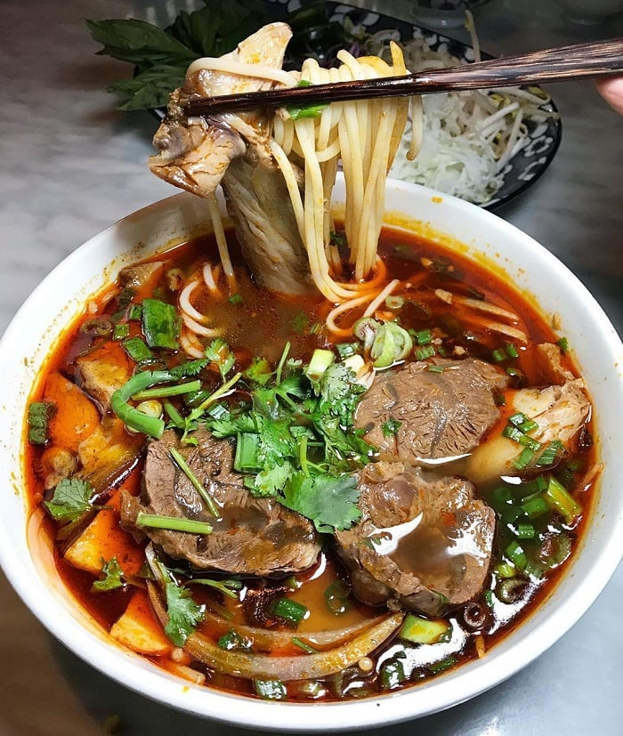
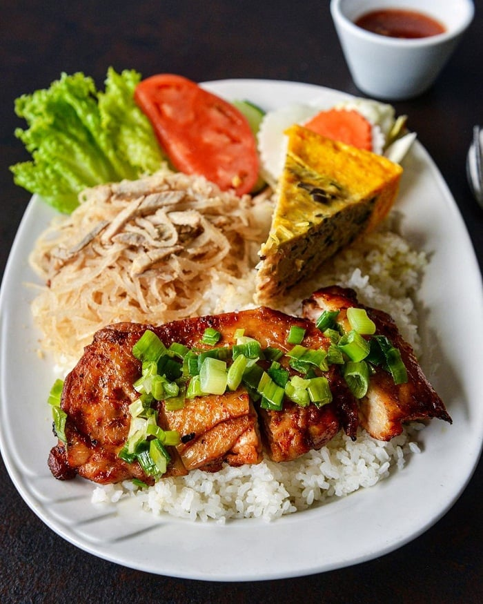
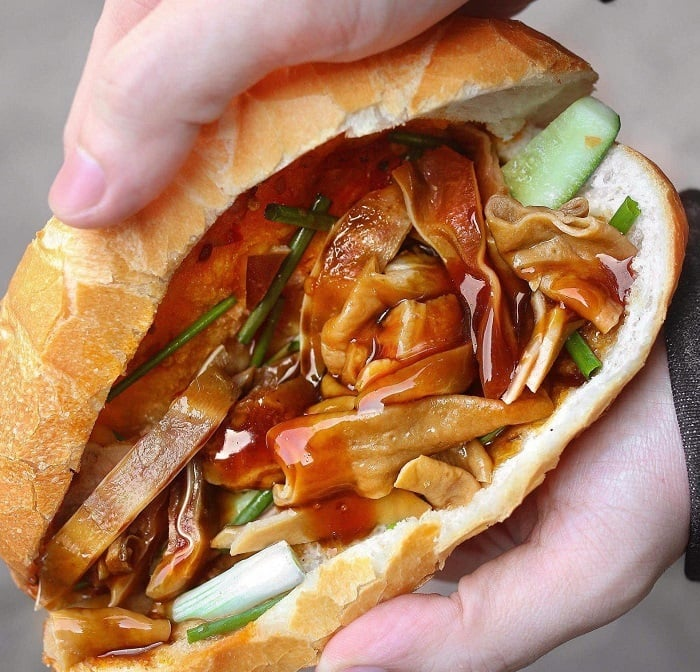
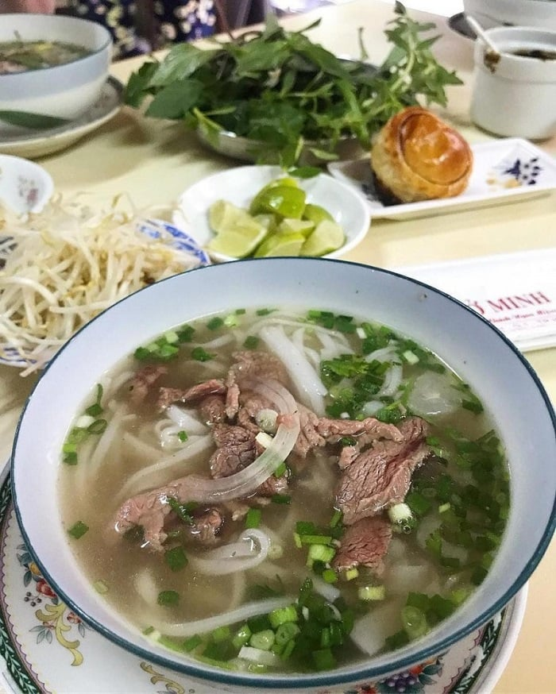

Food in Ho Chi Minh City: 5 MOST delectable dishes to enjoy on your tour
Food in Ho Chi Minh City is an absolute delight for foodies. From street food to fine dining, there are plenty of delicious dishes for you to enjoy on your Ho Chi Minh food tour. Get ready to embark on a culinary journey as we explore some of the most delectable delicacies in this city!
1. Beef noodle soup (Bun bo) – A must-try food in Ho Chi Minh City
Bun bo is made with thin rice noodles, beef, herbs, and a variety of spices. Its broth is usually made with beef stock and fish sauce, giving it an umami flavor and aroma typical of Vietnamese cuisine. The texture of the noodles varies depending on how they are cooked; some may be soft while others may be more al dente. Aromatic herbs, such as sawtooth coriander, lemongrass, and perilla leaf, add even more depth of flavor to this classic dish.

Beef noodle soup (bun bo) - a popular food in Ho Chi Minh City (Source: Collected)
No matter what cooking style you prefer, bun bo remains an all-time favorite food in Ho Chi Minh City. A typical bowl of bun bo is often topped with bean sprouts, cilantro, scallions, and thinly sliced onions for extra crunch and freshness. It is usually served with lettuce leaves so you can wrap them around the noodles for easy eating.
2. Broken rice (Com tam) – A famous food in Ho Chi Minh City
Broken rice (com tam) is a signature dish of Ho Chi Minh City. This classic Vietnamese dish consists of broken rice, grilled pork, fried eggs, pickled veggies, and a tangy fish sauce.

Sliced pork rolled with rice paper is one of the best Da Nang foods (Source: Collected)
The origin of broken rice dates back to the 1930s, when it was created as an affordable way for the working class to make their meal. Broken rice was cheaper than unbroken rice and could be cooked in less time.
3. Saigon sandwich (Banh mi) – The best street food in Ho Chi Minh City
Banh mi is a famous street food in Ho Chi Minh City that is loved by both locals and tourists alike due to its unique blend of flavors. This iconic sandwich consists of a crispy French baguette filled with various meats, vegetables, and sauces.
The origin of banh mi dates back to the 19th century, when it was modified from the common French baguette. This Saigon sandwich usually consists of pork or chicken, pâté, pickled carrots and daikon, cucumber slices, cilantro, mayonnaise, and chili sauce. These ingredients are all sandwiched between two slices of freshly baked golden-brown baguette.

Banh mi is a must-try food in Ho Chi Minh City (Source: Collected)
4. Ho Chi Minh City food guide: Pho Saigon – the best choice
Pho Saigon is an iconic traditional food in Ho Chi Minh City and a must-try for anyone looking to explore the traditional flavors of Vietnam.
This Vietnamese noodle soup is a delicate balance of flavors that has been perfected over centuries. It consists of a flavorful broth made with beef or chicken, thin rice noodles, fresh herbs, and toppings such as bean sprouts, basil leaves, cilantro, lime, and chili pepper.

Pho is a very popular dish of Vietnam (Source: Collected)
Pho Saigon is considered one of the tastiest traditional dishes in Ho Chi Minh City and is served at many eateries throughout the city. Prices for this dish range from 35,000 to 80,000 VND per serving.
5. Beef offal stew (Pha lau) – A delicious local food in Ho Chi Minh City
Beef offal stew, or pha lau, is a local specialty in Ho Chi Minh City that has been popular for centuries. Pha lau is a hearty stew made with beef offal and other ingredients like pork belly and vegetables. The dish is cooked slowly on low heat until all the flavors blend to create an incredibly flavorful and unique taste. The result is a rich and creamy soup-like dish that is often served with Vietnamese rice paper rolls and fresh herbs as toppings.
This traditional specialty originated in the 18th century, when farmers sold their livestock to local restaurants, who used the offal to make this tasty stew. Since then, it has become a popular dish that many people enjoy on special occasions throughout the year. It is also one of the most popular dishes at street markets, where it can be enjoyed along with banh mi or noodle soups.
There are many places that serve pha lau for you to enjoy in Ho Chi Minh City (Source: Collected)